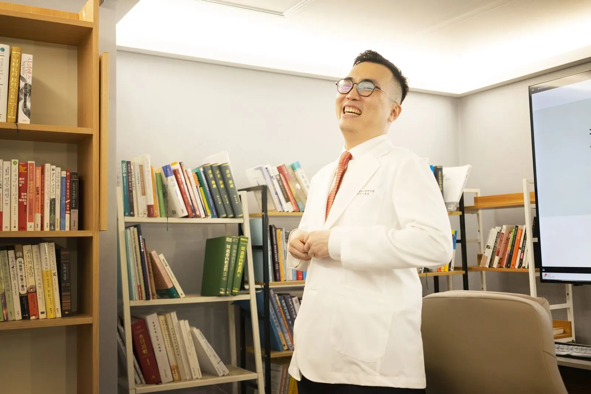

노량진 학원가에서 하루 종일 앉아 공부하며 과자·초콜릿·음료를 조금씩 계속 집어 먹다 보면 끼니때 배고픔이 사라지고 속이 더부룩해지기 쉬워, 간식의 시각과 자리, 세 끼의 고정 시각부터 함께 정합니다.
여쭙는 것
- 하루에 간식을 몇 번, 주로 어떤 것으로 드시나요? 책상 위에 늘 두는 간식이 있나요?
- 세 끼는 대략 몇 시에 드시나요? 강의 시간표 때문에 끼니 시각이 매일 달라지나요?
- 끼니때 배고픔을 느끼시나요, 아니면 시간이 되어서 먹는 편인가요?
생활에서 해 볼 것
- 아침 7시 30분쯤 일어나 미지근한 물을 한 컵 드시고, 8시쯤 아침을 드세요. 밥…
- 점심은 12시 30분, 저녁은 6시 30분처럼 세 끼의 시각을 먼저 정해 수첩 첫…
- 간식은 오전 10시 30분과 오후 4시, 하루 두 번으로 정하고 그 외에는 물이나…
한의원에서 함께 살필 것
- 끼니 시각을 정했는데도 입맛이 돌아오지 않고 식후 더부룩함이 이어지는 경우
- 오래 앉아 공부하면서 배가 차고 가스가 차며 변이 고르지 않은 경우
- 시험이 다가오며 긴장이 커지고 속이 답답하며 잠이 얕아진 경우
먼저 확인이 필요한 신호
- 한 달 사이 이유 없이 체중이 눈에 띄게 준 경우
- 먹은 뒤 자주 토하거나, 피가 섞인 구토를 한 경우
- 짜장처럼 검은 변을 보는 경우
노량진 학원가에서 강의와 자습이 이어지는 12월에는 책상 위에 과자, 초콜릿, 젤리, 단 커피를 두고 한 시간에도 몇 번씩 집어 먹는 수험생이 많습니다. 이렇게 조금씩 계속 먹으면 위가 쉬는 시간이 거의 없어 정작 끼니때는 배가 고프지 않고, 대충 몇 숟가락 먹은 뒤에도 더부룩하며 오후에는 졸음과 집중력 저하가 함께 오기 쉽습니다. 간식을 무조건 끊기보다 간식을 먹는 시각과 자리를 정하고, 세 끼 사이에 위가 비는 시간을 서너 시간 만들어 주는 것부터 시작하면 입맛과 속이 차츰 제자리를 찾는 분이 많습니다. 다만 체중이 한 달 사이 눈에 띄게 줄거나, 먹은 뒤 자주 토하거나, 검은 변을 본다면 생활 조정보다 진료가 먼저입니다.
왜 간식을 계속 먹으면 끼니때 입맛이 없어지나요
- 위와 장은 음식이 없을 때 안을 비우고 정리하는 움직임을 하는데, 조금씩 계속 들어오면 이 정리 시간이 줄어 늘 반쯤 찬 느낌이 남기 쉽습니다.
- 과자와 초콜릿, 단 음료처럼 당이 빨리 흡수되는 간식은 혈당을 빠르게 올렸다 내리게 해, 배고픔과 포만감의 신호가 들쑥날쑥해집니다.
- 공부하면서 먹으면 먹은 양을 몸이 잘 알아차리지 못해, 생각보다 많은 양을 먹고도 배부름은 덜 느끼는 경우가 많습니다.
- 긴장한 상태로 오래 앉아 있으면 장의 움직임이 느려지고, 구부정한 자세는 배를 눌러 더부룩함을 키울 수 있습니다.
- 졸음을 쫓으려 껌을 오래 씹거나 빨대로 음료를 자주 마시면 공기를 많이 삼켜 트림과 가스가 늘 수 있습니다.
- 단 커피나 에너지 음료를 여러 잔 마시면 입맛이 떨어지고 속쓰림이 생기기 쉬우며, 밤잠까지 흐트러질 수 있습니다.
- 한의학에서는 생각이 많고 오래 앉아 있는 생활이 비위의 기운을 지치게 한다고 보고, 이때 단것과 찬 음료가 겹치면 속에 습이 쌓여 무겁고 더부룩해지는 흐름으로 이해합니다.

먼저 이렇게 여쭙니다
- 하루에 간식을 몇 번, 주로 어떤 것으로 드시나요? 책상 위에 늘 두는 간식이 있나요?
- 세 끼는 대략 몇 시에 드시나요? 강의 시간표 때문에 끼니 시각이 매일 달라지나요?
- 끼니때 배고픔을 느끼시나요, 아니면 시간이 되어서 먹는 편인가요?
- 식사 뒤 더부룩함은 얼마나 가고, 명치 쪽인가요 배 전체인가요?
- 커피나 에너지 음료는 하루 몇 잔, 마지막 잔은 몇 시에 드시나요?
- 대변은 며칠에 한 번, 모양은 어떤가요?
- 잠드는 시각과 일어나는 시각은 어떻게 되나요? 밤늦게 먹는 날이 많나요?
- 한 달 사이 체중 변화가 있었나요?
- 시험이 다가오며 불안이나 긴장이 커졌다고 느끼시나요?
- 지난번 상담에서 정한 식사 시각이 있었다면 그 뒤 얼마나 지켜졌는지부터 이어서 여쭙니다.
일상에서 먼저 해 볼 수 있는 것
아래 순서는 오전 9시에 첫 강의가 시작되고 밤 10시쯤 자습을 마치는 하루를 기준으로 적었습니다. 시간표가 다르면 같은 간격으로 옮겨 쓰시면 됩니다.
- 아침 7시 30분쯤 일어나 미지근한 물을 한 컵 드시고, 8시쯤 아침을 드세요. 밥 반 공기와 달걀, 바나나 한 개처럼 간단해도 괜찮습니다. 아침을 먹어야 오전 간식이 줄어드는 분이 많습니다.
- 점심은 12시 30분, 저녁은 6시 30분처럼 세 끼의 시각을 먼저 정해 수첩 첫 장에 적어 두세요. 강의가 겹치는 날도 30분 안쪽으로만 움직이도록 합니다.
- 간식은 오전 10시 30분과 오후 4시, 하루 두 번으로 정하고 그 외에는 물이나 보리차를 드세요. 간식은 견과류 한 줌, 우유나 두유 한 팩, 삶은 달걀, 작은 과일처럼 당이 천천히 오르는 것을 고릅니다.
- 책상 위에는 물병만 두고, 간식은 가방 안이나 사물함에 넣어 두세요. 손이 닿는 곳에 없으면 무심코 집는 횟수가 확실하게 줄어드는 분이 많습니다.
- 간식은 자리에서 일어나 복도나 휴게 공간에서 5분 동안 먹고 돌아오세요. 공부와 먹는 시간을 나누면 먹은 양이 몸에 기록됩니다.
- 끼니는 자리를 옮겨 15분 이상 들이세요. 학원가에서 빨리 먹을 수 있는 메뉴를 고르더라도 첫 다섯 숟가락은 내려놓고 씹는 연습을 해 봅니다.
- 점심과 저녁 뒤에는 바로 앉지 말고 10분 정도 걸으세요. 강의실이 있는 건물 계단을 한두 층 천천히 오르내리는 정도도 괜찮습니다.
- 커피는 하루 두 잔 이내로, 마지막 잔은 오후 2시 전으로 정하고 단 시럽은 빼 보세요.
- 밤 10시 자습을 마친 뒤 배가 고프면 따뜻한 우유나 두유 한 잔, 바나나 반 개 정도로 마치고, 라면이나 튀긴 음식은 피해 보세요. 잠은 자정 전에 드는 것을 목표로 합니다.
- 일주일 동안 이 흐름을 지키며 끼니 전 배고픔이 느껴지는지를 하루 한 줄로 적어 보세요.

예를 들면 이런 경우입니다
아래는 실제 환자 이야기가 아니라 이해를 돕기 위해 만든 예시입니다.
- 예를 들어 독서실 책상 서랍에 과자와 초콜릿을 채워 두고 문제를 한 장 풀 때마다 하나씩 집어 먹는 경우, 점심때가 되어도 배가 고프지 않아 컵밥을 반쯤 남기고, 오후 3시쯤 다시 단것이 당기는 흐름이 생길 수 있습니다. 이럴 때는 서랍의 간식을 사물함으로 옮기고 간식 시각을 두 번으로 정하는 것부터 해 볼 수 있습니다.
- 예를 들어 강의 사이 쉬는 시간이 짧아 점심을 거르고 오후 내내 단 커피와 젤리로 버틴 뒤 밤 10시에 한꺼번에 많이 먹는 경우, 다음 날 아침 속이 더부룩하고 입맛이 없어 다시 아침을 거르는 고리가 이어지기 쉽습니다. 이때는 저녁을 몰아 먹기보다 오후 4시 간식을 든든하게 바꾸고, 밤에는 가볍게 마치는 쪽으로 바꿔 볼 수 있습니다.
- 예를 들어 모의고사가 가까워지며 긴장이 커지자 손이 심심해 껌을 하루 종일 씹고 탄산음료를 자주 마신 경우, 트림과 가스가 늘고 배가 빵빵하게 부풀 수 있습니다. 껌과 탄산음료를 줄이고 따뜻한 물이나 보리차로 바꾸면 배의 팽만이 덜하다는 분이 많습니다.
- 예를 들어 간식을 줄였는데도 끼니때 몇 숟가락만 먹으면 배가 꽉 차고, 체중이 한 달 사이 눈에 띄게 줄어든 경우는 습관만의 문제가 아닐 수 있어 내과 진료를 먼저 받아 보시는 편이 좋습니다.
자주 하는 오해
- 공부할 때는 뇌가 당을 많이 쓰니 단것을 계속 먹어야 한다고 생각하는 수험생이 많습니다. 세 끼를 제때 드시면 따로 단것을 계속 보충하지 않아도 되고, 단것을 자주 먹을수록 오히려 집중이 출렁이기 쉽습니다.
- 간식을 조금씩 나눠 먹으면 위에 부담이 덜하다고 여기기 쉽지만, 위가 비는 시간이 없어지면 더부룩함이 오히려 길게 남을 수 있습니다.
- 끼니를 거르면 살이 빠질 것이라 생각하는 분도 있지만, 거른 만큼 간식과 늦은 야식으로 채워지는 경우가 많습니다.
- 더부룩하니 소화제를 매일 챙겨 드시는 분도 있는데, 먹는 시각과 양을 먼저 바꿔 보고 그래도 이어지면 진료를 받아 원인을 살피는 편이 순서입니다.

스스로 점검해 보세요
- 책상 위나 서랍에 늘 간식이 있다.
- 하루에 간식을 네 번 넘게 먹는다.
- 끼니때 배고픔을 거의 느끼지 못한다.
- 세 끼의 시각이 날마다 두 시간 넘게 달라진다.
- 단 커피나 에너지 음료를 하루 세 잔 넘게 마신다.
- 밤 10시 이후에 끼니에 가까운 양을 먹는 날이 일주일에 세 번 넘는다.
- 식후 더부룩함이 두 시간 넘게 이어지는 날이 많다.
- 한 달 사이 이유 없이 체중이 줄었다.
- 먹은 뒤 일부러 토하거나, 먹는 것을 멈출 수 없다는 느낌이 자주 든다.
앞의 일곱 가지는 간식과 끼니의 시각을 바꾸며 지켜볼 만한 흐름이고, 뒤의 두 가지 중 하나라도 해당한다면 먼저 진료나 상담을 받아 보시길 권합니다.
한의원에서 함께 살필 수 있는 경우
- 끼니 시각을 정했는데도 입맛이 돌아오지 않고 식후 더부룩함이 이어지는 경우
- 오래 앉아 공부하면서 배가 차고 가스가 차며 변이 고르지 않은 경우
- 시험이 다가오며 긴장이 커지고 속이 답답하며 잠이 얕아진 경우
- 오후만 되면 머리가 무겁고 졸음이 쏟아져 단것을 찾게 되는 경우
- 병원 검사에서 큰 이상은 없다고 들었지만 명치가 자주 막힌 듯한 경우
좋은꿈참사랑한의원에서는 첫 방문 때 강의와 자습 시간표, 세 끼와 간식의 시각, 커피와 음료, 잠드는 시각과 대변 상태를 차례로 여쭙니다. 그 뒤 모든 분께 진맥을 하며 맥이 긴장되어 있는지 힘이 없는지, 몸 전체의 리듬이 어느 쪽으로 기울었는지를 살피고, 필요하면 배를 눌러 보며 답답한 자리와 혀의 상태를 함께 봅니다. 수험 생활은 길게 이어지는 경우가 많아, 공부 일정에 맞춰 무리 없이 지킬 수 있는 식사 순서를 함께 정하고, 침이나 한약 상담 여부도 이야기와 진찰을 바탕으로 정합니다. 다음 방문에서는 지난번 정한 시각이 얼마나 지켜졌는지, 시험 일정이 어떻게 바뀌었는지부터 이어서 여쭙니다. 이종호 대표원장을 비롯해 조영기 원장, 정원영 원장이 같은 방식으로 진료합니다.
노량진에서 오신다면 노량진역(1·9호선) 3번 출구에서 마을버스 동작01을 타고 신동아리버파크에서 내리시면 됩니다. 상도역에서는 3번 출구로 나와 약 200m 직진한 뒤 오거리에서 우회전해 약 200m 오시면 됩니다. 강의 사이 시간이 짧다면 평일 저녁이나 주말 시간을 활용하시고, 자세한 시간은 방문 전 전화로 확인해 주세요.

얼마나 지켜보고, 언제 상담하면 좋을까요
- 간식 시각과 세 끼 시각을 정하고 일주일 정도 지키면 끼니 전 배고픔이 돌아오는지 대략 보입니다.
- 2주가 지나도 끼니때 입맛이 없고 식후 더부룩함이 두 시간 넘게 이어진다면 상담을 권합니다.
- 체중이 한 달 사이 눈에 띄게 줄었거나, 먹은 뒤 자주 토하거나, 삼키기 어려운 느낌이 든다면 기다리지 말고 내과 진료를 받으세요.
- 먹는 것을 조절하지 못하는 느낌과 죄책감이 반복된다면 혼자 견디지 말고 일찍 도움을 받으시는 편이 좋습니다.
이렇게 기록해 오시면 상담이 쉬워집니다
- 일주일 동안 세 끼와 간식의 시각, 무엇을 얼마나 먹었는지 한 줄씩
- 끼니 전 배고픔이 있었는지 없었는지 표시
- 식후 더부룩함이 이어진 시간
- 커피와 음료의 종류, 잔 수, 마지막 잔의 시각
- 잠든 시각과 일어난 시각
- 대변을 본 날과 모양
- 그 주의 강의·시험 일정과 긴장했던 날

이런 증상은 먼저 확인이 필요합니다
- 한 달 사이 이유 없이 체중이 눈에 띄게 준 경우
- 먹은 뒤 자주 토하거나, 피가 섞인 구토를 한 경우
- 짜장처럼 검은 변을 보는 경우
- 삼키기 어렵거나 음식이 가슴에 걸리는 느낌이 이어지는 경우
- 밤에 배가 아파 잠에서 깨는 일이 반복되는 경우
- 먹는 것을 멈출 수 없거나 먹은 뒤 일부러 토하는 일이 반복되는 경우
복용 중인 약은 처방한 의사와 상의 없이 줄이거나 끊지 않습니다. 시험 부담으로 마음이 많이 힘들고 극단적인 생각이 든다면 혼자 견디지 마시고 자살예방상담전화 109나 119에 바로 연락해 도움을 받으세요.
함께 읽으면 좋은 글
- 낮에는 끼니를 거르다 밤에 몰아 먹는 수험생은 무엇을 점검하나요?
- 시험 기간에 야식 대신 먹을 간단한 간식은 어떻게 고르나요?
- 노량진에서 시험을 준비하는 수험생은 몸을 어떻게 챙기나요?
한눈에 보는 표
| 구분 | 핵심 |
|---|---|
| 여쭙는 것 | 하루에 간식을 몇 번, 주로 어떤 것으로 드시나요? 책상 위에 늘 두는 간식이 있나요? 세 끼는 대략 몇 시에 드시나요? 강의 시간표 때문에 끼니 시각이 매일 달라지나요? |
| 생활에서 해 볼 것 | 아침 7시 30분쯤 일어나 미지근한 물을 한 컵 드시고, 8시쯤 아침을 드세요. 밥 반 공기와 달걀, 바나나 한 개처럼 간단해도 괜찮습니다. 아침을 먹어야 오전 간식이 줄어드는 분이 많습니다. 점심은 12시 30분, 저녁은 6시 30분처럼 세 끼의 시각을 먼저 정해 수첩 첫 장에 적어 두세요. 강의가 겹치는 날도 30분 안쪽으로만 움직이도록 합니다. |
| 한의원에서 함께 살필 것 | 끼니 시각을 정했는데도 입맛이 돌아오지 않고 식후 더부룩함이 이어지는 경우 오래 앉아 공부하면서 배가 차고 가스가 차며 변이 고르지 않은 경우 |
| 먼저 확인이 필요한 신호 | 한 달 사이 이유 없이 체중이 눈에 띄게 준 경우 먹은 뒤 자주 토하거나, 피가 섞인 구토를 한 경우 |
자주 묻는 질문
공부할 때 간식을 아예 먹지 말아야 하나요?
그렇지 않습니다. 하루 두 번 정도로 시각을 정해, 책상이 아닌 곳에서 짧게 드시는 방식을 권합니다. 견과류, 우유, 삶은 달걀처럼 천천히 소화되는 것이 좋습니다.
강의 시간 때문에 점심을 제때 못 먹으면 어떻게 하나요?
점심이 늦어질 날에는 오전 간식을 조금 든든하게 드시고, 점심과 저녁 사이 간격을 네 시간 정도로 맞춰 보세요. 늦은 점심 뒤 바로 저녁을 몰아 드시는 것은 피하는 편이 좋습니다.
시험 기간에 한약을 먹어도 공부에 지장이 없나요?
진맥과 생활 리듬을 보고 처방과 복용 시각을 함께 정합니다. 시험 당일과 전날의 복용 방법은 처방받은 한의원과 미리 상의해 두세요.
노량진에서 한의원까지는 어떻게 가나요?
노량진역(1·9호선) 3번 출구에서 마을버스 동작01을 타고 신동아리버파크에서 내리시면 됩니다. 궁금한 점은 02-815-7510으로 문의해 주세요.
진료 시간은 어떻게 되나요?
평일은 오전 9시 30분부터 오후 8시까지(점심 13:00~14:00), 토·일·공휴일은 오전 9시 30분부터 오후 3시까지 점심시간 없이 진료합니다.
이 글은 일반적인 건강 정보이며 개인의 진단이나 치료를 대신하지 않습니다. 증상이 있거나 복용 중인 약이 있다면 진료를 통해 확인하세요. 치료 효과는 개인마다 다를 수 있습니다.
작성 기준: 일반적으로 알려져 있는 건강 정보를 참고해 정리했습니다(대표원장 감수). 증상 기록은 1~2주 동안 하루 1회, 비슷한 시간에 적어 오시면 지난 상태와 비교하기 쉽습니다.
좋은꿈참사랑한의원은 재진 때 지난번 이야기부터 이어서 여쭙니다. 진료시간과 예약은 오시는 길에서 확인하세요.